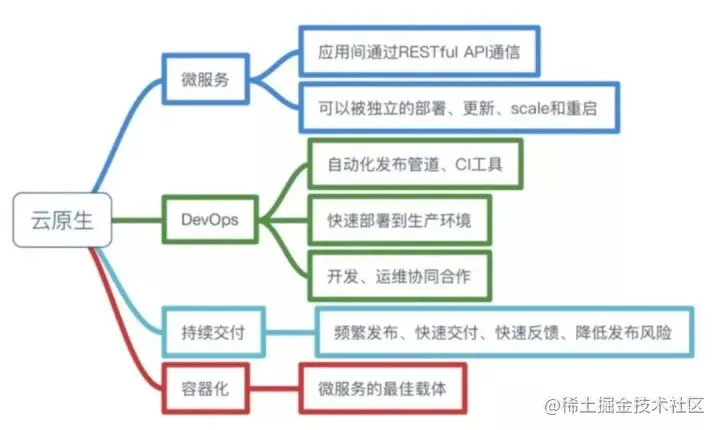
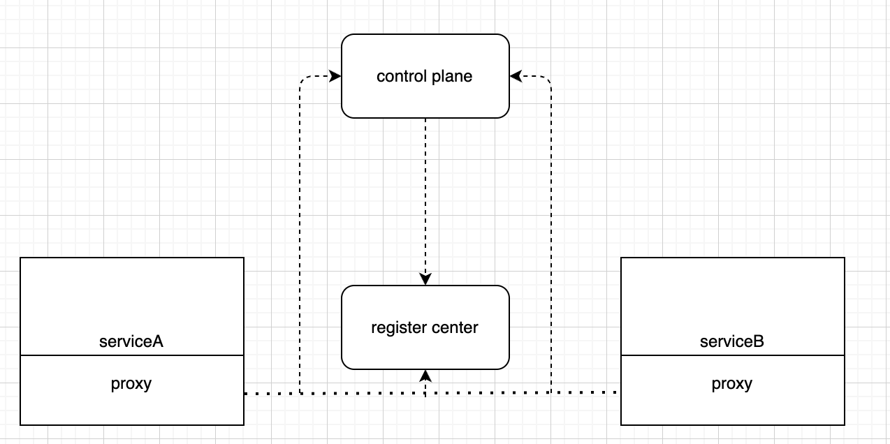

是什么？
微服务以专注于单一责任与功能的小型功能区块为基础，利用模块化组合出复杂的大型应用程序，各区块可以使用与语言无关的api相互通讯。 服务框架的构建是一个持续演进的过程。
单体架构
最初的服务，如实现一个小说app，我们会把所有的功能都实现在一个程序，将各种功能按照高内聚低耦合的理念划分成多个模块(书成模块、登陆模块、书架模块等等…)。一个服务就是一个应用。
随着访问量增多，服务器压力变大，为了支持业务发展，首先选择了最直接的方法—加机器。
因此需要负载均衡来支持流量增长。所有的请求需要通过一层负载均衡，再打到最终的服务上。
但随着业务的发展、产品的迭代，单体架构的缺陷愈发明显：
- 所有功能高度耦合，互相影响，难以管理，团队合作受限
- 部分的逻辑修改也需要对整体服务进行开发和测试，采用瀑布式开发模型，开发周期长迭代慢。且需要影响全部服务的重建和部署，成本高
- 一个小bug可能会导致整个系统的崩溃
因此，需要对单体架构进行解耦！
面向服务
- 借助单体架构的功能划分，将单体架构划分为几个大的服务应用。
- 每个服务应用内部通过负载均衡横向扩展。
- 拆分后的每个服务应用创建自己的接口定义，以便被其他服务发现
- 服务之间的通讯类似于计租中的总线原理：通过一个独立的中间件提供消息通讯
以上是简易版企业服务总线的初步设计，系统的所有流量通过通信总线进行路由分发。但随着流量的激增，通信总线会出现问题，通信总线成为了整个系统的中心化节点和瓶颈，影响了系统的扩展性和稳定性。
SOA
去中心化。
对于通信总线分发流量而导致的问题，使用DNS+IP网络架构解决。
- 域名：为每个服务定义一个psm(product.subsystem.module)作为服务的域名
- IP：服务实例其实就是一个机器终端，拥有自己的ip地址
- 根服务器： 维护psm->ip的映射，实现服务发现
- 服务注册：每个服务实例在创建后不断的向注册中心上报自己的地址(psm-ip)和实例状态
- 服务治理：注册中心维护着每个服务对应的实例地址列表及其健康状态
- 服务发现：实例定时向注册中心获取要访问的服务的实例地址，访问时通过负载均衡选择其中一个p2p来访问，流量不经由注册中心转发。负载均衡通过服务本身来实现。
- 通信协议：服务提供IDL文件，通过统一的rpc进行通信。
引入gateway将外部流量转换为内部请求。注册中心可以多实例部署，集群内部使用分布式算法保证其最终一致性。可以对服务进行更细粒度的拆分。
至此，完成了微服务架构的设计：通过注册中心进行服务治理，使用一个rpc框架在实现服务注册、服务发现、负载均衡、熔断等功能。
所谓云原生
云原生利用和发挥云平台的弹性和分布式优势，在云上构建和运行应用程序。
2013年，docker横空出世，与微服务架构理念一拍即可。
- 轻量级容器
- 统一的运行环境
- 快速部署 使用k8s进行容器编排，支持容器等快速部署和资源调度。

虽然已经解决了单体架构很多问题，但是仍存在些问题：
微服务框架向业务程序注入了许多与业务无关的代码，服务内部可能有许多微服务框架相关的并发线程，业务侵入性强。且开发语言的不统一也会给整个基础模块的维护和迭代带来巨大成本。
解耦。从高内聚低耦合的原则出发，将与业务无关的逻辑从框架代码中抽出，以代理的模式作为业务程序的基础服务存在，服务可以更专注于业务逻辑。作为配合，保留一个轻量级框架作为业务应用和框架代理之间沟通的中间层。即sidecar。这部分程序的升级发布，除非是与rpc编解码相关，否则不需要业务代码任何变更，实现基础服务与业务服务的解耦。伴生容器会接管业务服务的所有对外流量进行处理和分发，业务服务对此无感知。
更进一步，需要通过这一层sidecar对调用进行超时配置、接口监控、流量控制、权限控制等操作，会使用一个控制0中心为我们提供配置的能力，称为control plane。抽取的这一层sidecar模式部署的伴生容器部分，称为data plane(proxy、gateway)
以上其实就是service mesh的设计。
FAQ
提出好的问题最重要
问题1： 对于通信总线去中心化的这一步中，去中心化该怎么样理解？
即不是所有的流量经过通信总线，对于注册中心可以多实例部署，并不依赖一个实例。
追问： 但是注册中心中，流量也需要经过注册，否则如何拿到ip和其他注册信息哇？
只需要定时去拉注册中心中的数据即可，拉取列表后数据就会存在于本地。
追问： 注册中心可以部署多个实例，那通信总线可以吗？
可以部署多个通信总线，但是所有流量还会经过通信总线。
问题2：现在的sidecar是把agent打到业务的镜像中，是出于什么目的？一般sidecar会单独存在一个容器，业务程序所在容器和sidecar的容器进行跨容器通信。 公司主要有两个平台提供sidecar机制。servicemesh和tce sidecar。tce sidecar相当于是独立的容器，servicemesh是伴生容器，两个进程都运行在一个容器上。
追问：公司主推的是伴生容器吗？
他们的应用场景不同。sidecar是有sdk的维护，servicemesh将library移动到外部作为独立进程存在，希望在服务独立的同时保持相同的迭代节奏。tce sidecar只需要把k8s一个pod内启动多个紧密耦合共享资源的共处容器的能力封装出来提供给用户。
问题3： 现在这套方式还存在什么缺点吗？
服务过多，会有一些开销是用在rpc调用和不同服务之间的数据pack，需要尝试把服务部署到同一个集群来优化。从这个角度来讲，有没有可能有一些动态化组件，如faas，现在的faas更多用在消息的消费上，假设接口放在faas上，在调用接口时将函数拉到本地，使用动态组装可以避免跨网络的调用。